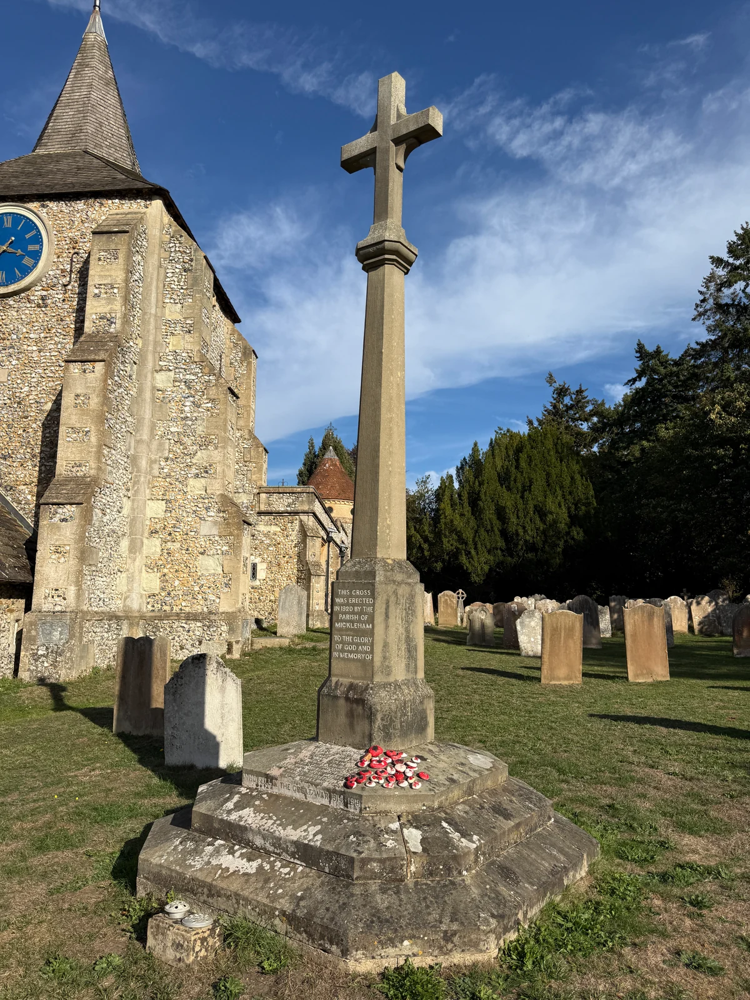
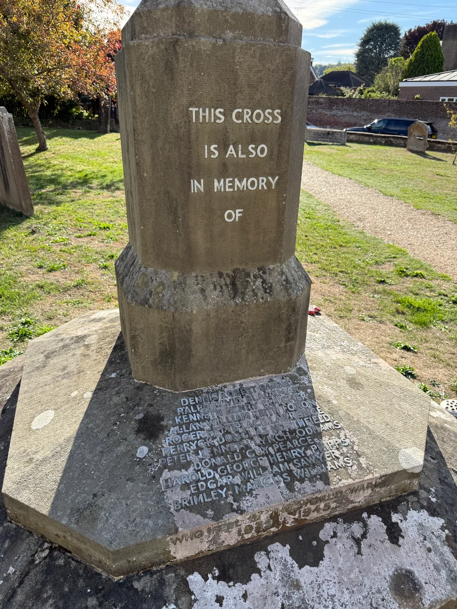
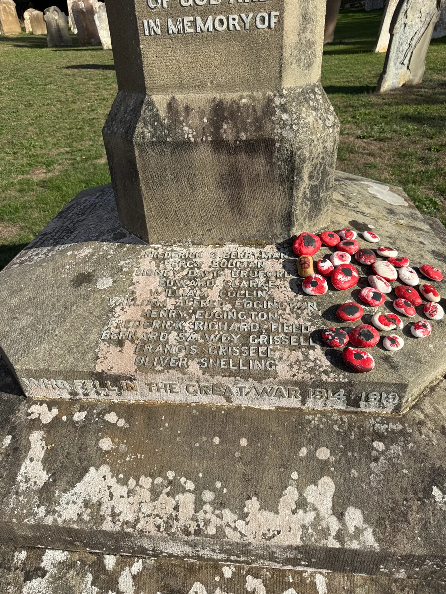
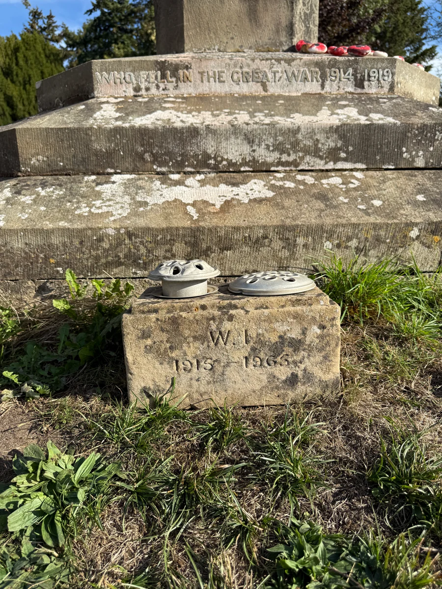

Local History
Mickleham War Memorial
The war memorial stands in the churchyard at St Michael & All Angels and commemorates local people who died in the two world wars.
A lasting tribute
The inscription records that this cross was erected in 1920 by the parish of Mickleham, “to the glory of God and in memory of” those commemorated here.
Its stepped stone base bears names alongside the words “Who fell in the Great War 1914–1919”. These inscriptions connect the memorial with the people remembered after the First World War.
The memorial also commemorates the Second World War. Another face reads “This cross is also in memory of”, above further names, with the dates 1939–1945 engraved on the base.
Standing beside St Michael & All Angels, it is a place to pause and remember. The parish calendar includes an Act of Remembrance at the War Memorial, keeping remembrance part of parish life today.





